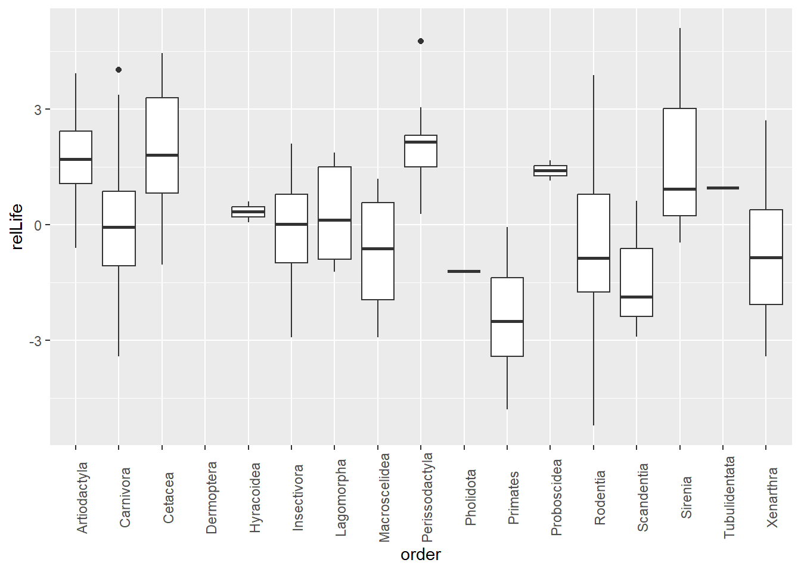
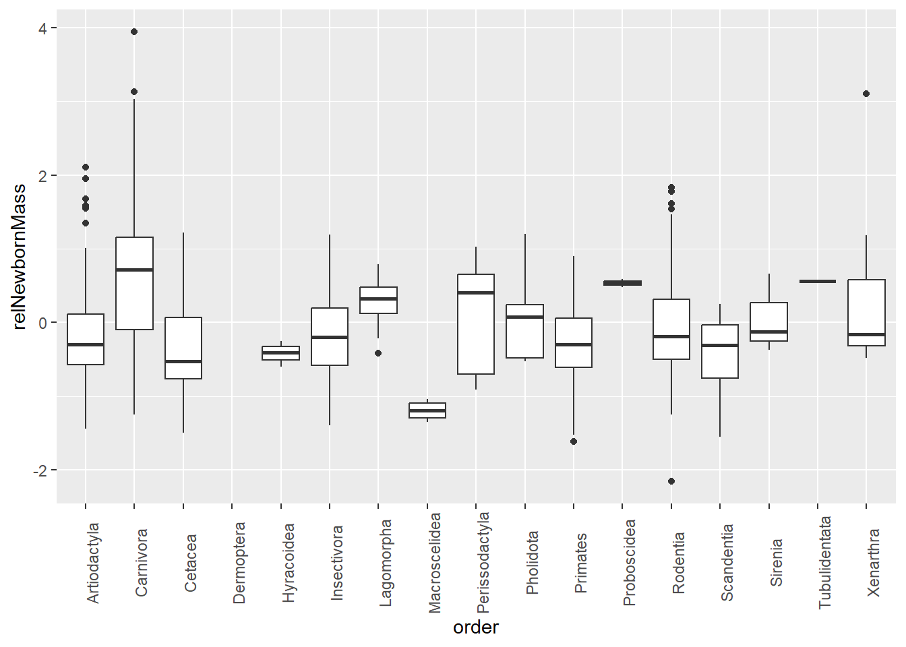
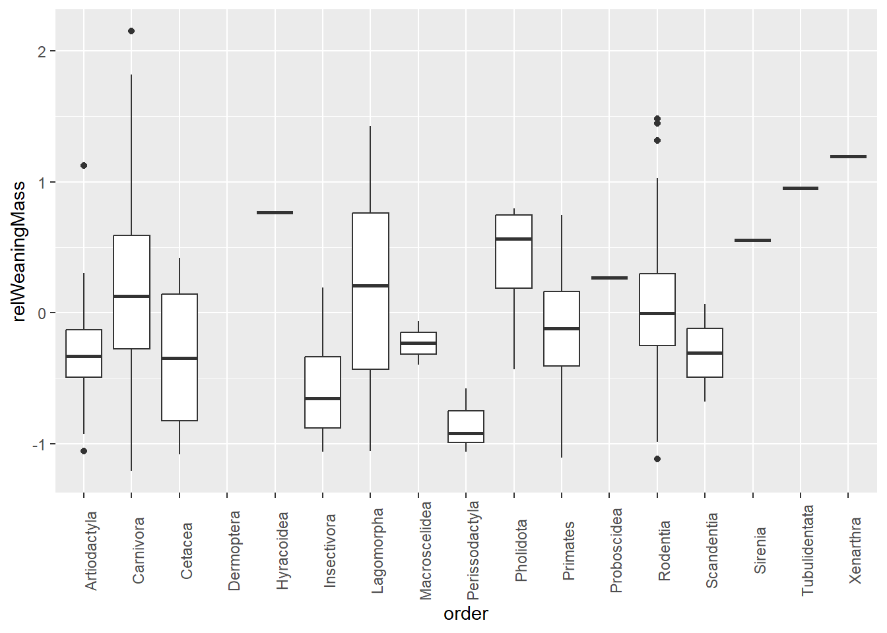

Warning: package 'tidyverse' was built under R version 4.5.2
Warning: package 'ggplot2' was built under R version 4.5.2
Warning: package 'tidyr' was built under R version 4.5.2
Warning: package 'readr' was built under R version 4.5.2
Warning: package 'purrr' was built under R version 4.5.2
Warning: package 'dplyr' was built under R version 4.5.2
Warning: package 'stringr' was built under R version 4.5.2
Warning: package 'forcats' was built under R version 4.5.2
Warning: package 'lubridate' was built under R version 4.5.2
── Attaching core tidyverse packages ──────────────────────── tidyverse 2.0.0 ──
✔ dplyr 1.1.4 ✔ readr 2.1.6
✔ forcats 1.0.1 ✔ stringr 1.6.0
✔ ggplot2 4.0.1 ✔ tibble 3.3.0
✔ lubridate 1.9.4 ✔ tidyr 1.3.1
✔ purrr 1.2.0
── Conflicts ────────────────────────────────────────── tidyverse_conflicts() ──
✖ dplyr::filter() masks stats::filter()
✖ dplyr::lag() masks stats::lag()
ℹ Use the conflicted package (<http://conflicted.r-lib.org/>) to force all conflicts to become errors
f <-"https://raw.githubusercontent.com/difiore/ada-datasets/main/Mammal_lifehistories_v2.txt"d <-read_tsv(f)
Rows: 1440 Columns: 14
── Column specification ────────────────────────────────────────────────────────
Delimiter: "\t"
chr (4): order, family, Genus, species
dbl (9): mass(g), gestation(mo), newborn(g), weaning(mo), wean mass(g), AFR(...
num (1): refs
ℹ Use `spec()` to retrieve the full column specification for this data.
ℹ Specify the column types or set `show_col_types = FALSE` to quiet this message.
Regress the age [gestation(mo), weaning(mo), AFR(mo), and maxlife(mo)] and mass [newborn(g) and weanmass(g)] variables on overall body mass(g) and add the residuals to the dataframe as new variables [relGest, relWean, relAFR, relNewbornMass, and relWeaningMass].
Plot residuals of max lifespan in relation to Order. Which mammalian orders have the highest residual lifespan?
The orders with the highest residual lifespans are Sirenia and Perissodactyla. The orders with the highest median residual lifespans are Perissodactyla and Cetacea.
Warning: Removed 848 rows containing non-finite outside the scale range
(`stat_boxplot()`).

Plot residuals of newborn mass in relation to Order. Which mammalian orders have the highest residual newborn mass?
The orders with the highest residuals of newborn mass are Carnivora and Xenarthra. The orders with the highest median residuals of newborn mass are Carnivora and Proboscidea.
Warning: Removed 624 rows containing non-finite outside the scale range
(`stat_boxplot()`).

Plot residuals of weaning mass in relation to Order. Which mammalian orders have the highest residual weaning mass?
The orders with the highest residuals of weaning mass are Carnivora and Xenarthra. The orders with the highest median residuals of weaning mass are Carnivora and Proboscidea.
Warning: Removed 1044 rows containing non-finite outside the scale range
(`stat_boxplot()`).

Run models and a model selection process to evaluate what variables best predict each of the two response variables, maxlife(mo) and AFR(mo), from the set of the following predictors: gestation(mo), newborn(g), weaning(mo), weanmass(g), litters/year, and overall body mass(g).
Winnowing data set:
d <- d |>drop_na(maxlife_mo) |>drop_na(AFR_mo) |>drop_na(gestation_mo) |>drop_na(newborn_g) |>drop_na(weaning_mo) |>drop_na(weanmass_g) |>drop_na(`litters/year`) |>drop_na(mass_g)
Run models and model selection process:
Maxlife(mo):
library(MuMIn)
Warning: package 'MuMIn' was built under R version 4.5.3
For each of the two response variables, indicate what is the best model overall based on AICc and how many models have a delta AICc of 4 or less?
Maxlife(mo): The best model overall uses the variables litters/year, gestation(mo), mass(g), and weaning(mo) to predict maxlife(mo). It has an AICc of 256.83. There are four other models that have a delta AICc of 4 or less, with AICc values 257.86, 258.95, 259.67, and 259.91.
AFR(mo): The best model overall uses the variables litters/year, gestation(mo), mass(g), and weaning(mo) to predict age at first repoduction(mo). It has an AICc of 321.23. There are nine other models that have a delta AICc of 4 or less, with AICc values 321.52, 321.82, 321,82, 323.37, 323.37, 323.65, 324.12, 324.81, and 324.94.
What variables, if any, appear in all of this set of “top” models?
Maxlife(mo): The variables that appear in all of this set of top models are 1, 2, and 5, litters/year, gestation(mo) and weaning(mo), respectively.
AFR(mo): The variables that appear in all of this set of top models are variables 1 and 2, litters/year and gestation(mo), respectively.
Calculate and plot the model-averaged coefficients and their CIs across this set of top models.